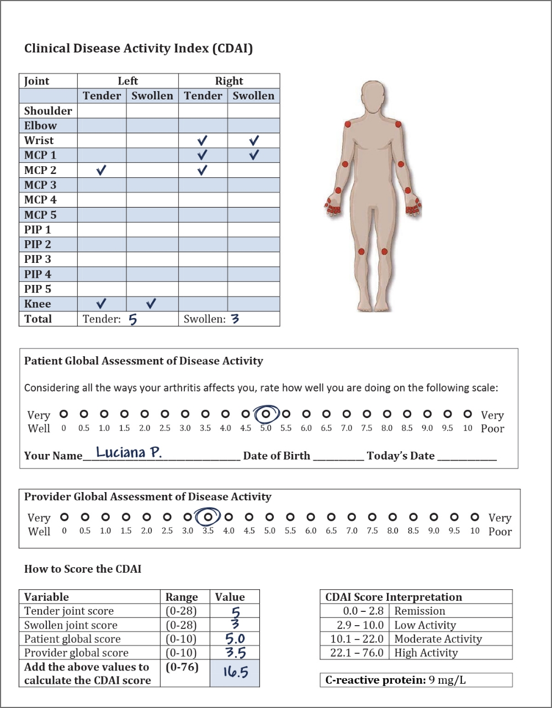

56-year-old female with RA and metabolic syndrome
Luciana is a 56-year-old Hispanic female nurse. She is 158 centimetres tall and weighs 90 kilograms. She is obese, with a BMI of 36.1 kg/m2 and is in menopause. Due to her job requirements, Luciana does not get a chance to participate in regular physical activity. Her job involves a lot of standing, walking, and lifting patients. Luciana tries to cook and bring lunch to work, but she eats at the hospital cafeteria most of the time. She has a fatty liver, and her BP is typically measured at 135/90 mmHg. Luciana’s fasting glucose level is 6.0 mmol/L (borderline hyperglycemia). She has high triglycerides (1.8 mmol/L) and low HDL-C levels (1.0 mmol/L). Her creatinine is elevated at 135 µmol/L (normal = 100). Luciana was a heavy smoker but successfully quit one year ago. Her mother had type 2 diabetes. Luciana is currently taking a statin and a diuretic, beta blocker and ACE inhibitor. She has had RA for six years and is being treated with methotrexate + hydroxychloroquine.

56-year-old female with RA and metabolic syndrome
“I recently had a follow-up with my rheumatologist. He counted my tender and swollen joints and asked me to rate how my arthritis affects me on a scale of 0 to 10, and we completed a few other forms and tests.”
His assessment was as follows:
Luciana’s CDAI is 16.5, indicating moderate inflammatory activity. Her CRP level is slightly elevated.
Considering MTX safety in patients with RA and fatty liver
Considering Luciana has a fatty liver, is it safe to use MTX to treat rheumatoid arthritis in Luciana?
Depends on more information needed
In Luciana’s case, it is recommended that a non-invasive alternative to liver biopsy (i.e., FibroScan®) be performed,1 as patients with metabolic syndrome may experience significant liver fibrosis. If the fibrosis score is F2 (i.e., moderate liver scarring) or less, MTX can be used. However, MTX should be avoided in patients with fibrosis scores above F2.2
Methotrexate dose should be reduced in patients with chronic renal failure, and NSAIDs should be avoided. Approximately 90% of methotrexate is renally excreted,3 and any chronic renal dysfunction could delay the elimination of methotrexate. Accordingly, the prolonged presence of methotrexate in plasma concentration can increase methotrexate-related toxicities.3 One study recommended that the methotrexate dose be reduced by half if the glomerular filtration rate is <30 mL/min.4 A FibroScan should be performed in patients with NASH, and if the fibrosis score is F2 or less, methotrexate can be used. Otherwise, methotrexate should be avoided. If GFR decreases then MTX dose should be lowered.3
Alternatives to MTX include hydroxychloroquine (which this patient is taking and on its own is likely too weak to improve her disease activity), leflunomide and sulfasalazine.5 In patients with end-stage renal disease or with impaired renal function, options include a TNF inhibitor such as the monoclonal TNF antagonist, infliximab (although the monograph specifies that no dosing recommendations can be made in patients with renal impairment as this has not been studied),6 rituximab (whose monograph notes that no pharmacokinetic data are available in renal insufficiency), tocilizumab (the monograph specifies that no dose adjustments are required in mild-moderate renal impairment while patients with severe renal impairment have not been studied) and abatacept (whose monograph, like that of infliximab, states that no dose recommendations can be made in renal impairment as this has not been studied).
Tofacitinib may be used in patients who have an intolerance or have failed treatment with MTX and one other csDMARD,7 but per the monograph this should be used with caution (and modified dosing) in patients with moderate or severe renal insufficiency. Tofacitinib should be avoided in patients who are at an increased risk of thrombosis,7 and should be used with caution in older patients who are current or past smokers and patients with other CV or malignancy risk factors.8 Health Canada has also initiated a new safety review of the other JAK inhibitors, upadacitinib and baricitinib, examining potential risks of serious heart-related problems, cancer and blood clots. Finally, according to its monograph, baricitinib does not require dose adjustment in mild renal impairment, but is not recommended in patients with moderate-to-severe renal impairment or ESRD.
In Luciana’s case, indicators of the metabolic syndrome include elevated triglycerides, low HDL-C, hypertension, and borderline hyperglycemia, high BMI, centripetal obesity (elevated waist circumference).
The potential impact of medications
Some medications, such as chronic low dose prednisone, duloxetine and pregabalin for pain, can increase weight. High daily calorie intake and lack of exercise causing weight gain can worsen fatty liver.
What messages would rheumatologists and cardiologists like to communicate to primary care physicians about managing patients with RA with or at risk of metabolic syndrome, and how can they best communicate their thoughts and plans to primary care physicians and to each other?
Click to see Dr. Pope’s answer.
Click to see Dr. Tardif’s answer.

In patients with RA with fatty liver:
MTX dose should be ____________ in patients with moderate chronic renal failure.
Which of the following medications can be associated with a significant increase in weight?
Which of the following conditions increase the risk of MACE?
1. Sandrin L, Fourquet B, Hasquenoph JM, et al. Transient elastography: a new noninvasive method for assessment of hepatic fibrosis. Ultrasound Med Biol 2003; 29:1705-13.
2. LiverTox: Clinical and Research Information on Drug-Induced Liver Injury. National Institute of Diabetes and Digestive and Kidney Diseases; 2012-. Methotrexate. Available at: https://www.ncbi.nlm.nih.gov/books/NBK548219/. Accessed March 2022.
3. Wang W, Zhou H, Liu L. Side effects of methotraxate therapy for rheumatoid arthritis: A systematic review. European Journal of Medicinal Chemistry 2018; 158(5):502-16.
4. Erdbrügger U, de Groot K. Is methotrexate nephrotoxic? Dose-dependency, comorbidities and comedication. Z Rheumatol 2011; 70(7):549-52.
5. Drosos A. Methotrexate intolerance in elderly patients with rheumatoid arthritis: what are the alternatives? Drugs Aging 2003; 20(10):723-36.
6. Hammoudeh M. Infliximab treatment in a patient with rheumatoid arthritis on haemodialysis. Rheumatology (Oxford) 2006; 45:357-9.
7. U.S. FDA. FDA requires warnings about increased risk of serious heart-related events, cancer, blood clots, and death for JAK inhibitors that treat certain chronic inflammatory conditions. Available at: www.fda.gov/drugs/drug-safety-and-availability/fda-requires-warnings-about-increased-risk-serious-heart-related-events-cancer-blood-clots-and-death. Accessed March 2022.
8. Health Canada. Health Canada safety review finds link between the use of Xeljanz and Xeljanz XR (tofacitinib) and increased risk of serious heart-related issues and cancer. Available at: https://recalls-rappels.canada.ca/en/alert-recall/health-canada-safety-review-finds-link-between-use-xeljanz-and-xeljanz-xr-tofacitinib. Accessed March 2022.
9. Remicade® (infliximab) product monograph. Janssen Inc. Revised October 15, 2021.
10. Ruxience (rituximab) product monograph. Pfizer Canada ULC. Revised July 8, 2020.
11. Actemra® (tocilizumab) product monograph. Hoffman-La Roche Ltd. Revised January 4, 2021.
12. Orencia® (abatacept) product monograph. Bristol-Myers Squibb. Revised September 9, 2019.
13. Xeljanz® (tofacitinib) product monograph. Pfizer Canada ULC. Revised December 9, 2021.